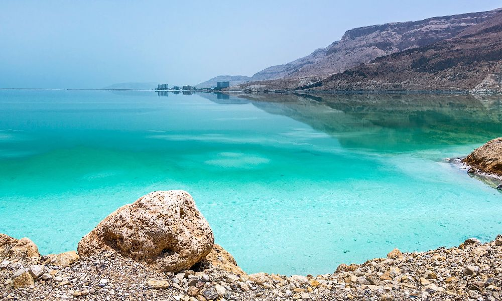
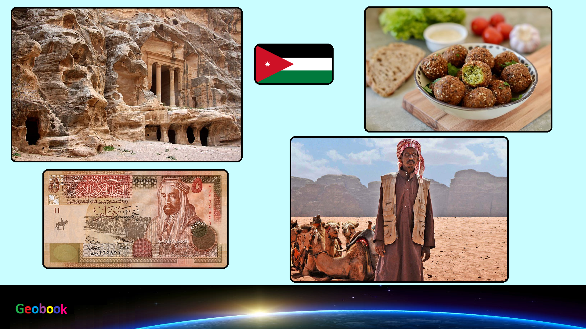

×

Jordan
Климат
Климат Иордании характеризуется как субтропический средиземноморский — на западе и как пустынный — на юге и востоке.
Средние месячные температуры в Аммане (на северо-западе) варьируются от 8 до 26°С; в порте Акаба (на юго-западе) они меняются от 16 до 33°С.
Большая часть получает довольно скудные осадки. На северо-западе вблизи реки Иордан годовой уровень осадков достигает 400 мм; в юго-восточных районах он составляет менее 100 мм. В самой долине Иордана выпадает от 120 до 200 мм осадков в год. В горных и возвышенных районах случаются заморозки и снегопады, в то же время на равнине они довольно редки.
____
